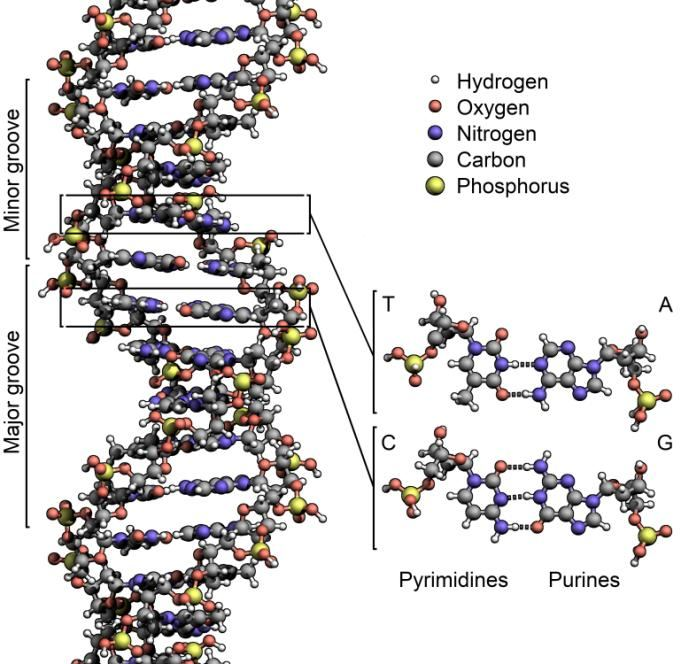

All living creatures are created from the Pairs (double helix DNA Molecules). It produces our brains. The brain can receive and store information. So, we can remember, as the above verse narrates. FIGURE 51.4: Double Helix DNA Molecule (Pair)

চিত্র 51_4 / Figure 51_4
সমস্ত জীবিত প্রাণী জোড়া (ডাবল হেলিক্স ডিএনএ অণু) থেকে সৃষ্টি হয়েছে। এটি আমাদের মস্তিষ্ক তৈরি করে। মস্তিষ্ক তথ্য গ্রহণ এবং সংরক্ষণ করতে পারে। সুতরাং, আমরা মনে রাখতে পারি, যেমন উপরের আয়াতটি বর্ণনা করেছে। চিত্র 51.4: ডাবল হেলিক্স ডিএনএ অণু (জোড়া)
চিত্র 51_4 / Figure 51_4
―Hasten ye then to God. I am from Him a Warner to you, clear and open! And make not another an object of worship with God. I am from Him a Warner to you, clear and open!‖
-তাহলে আল্লাহর দিকে ত্বরা কর। আমি তাঁর পক্ষ থেকে তোমাদের জন্য একজন সতর্ককারী, স্পষ্ট ও প্রকাশ্য! আর অন্যকে আল্লাহর কাছে উপাসনার বস্তু বানাবেন না। আমি তাঁর পক্ষ থেকে তোমাদের জন্য একজন সতর্ককারী, স্পষ্ট ও প্রকাশ্য!”
Similarly, no apostle came to the peoples before them but they said in like manner: "A sorcerer or one possessed"! Is this the legacy they have transmitted one to another? Nay, they are themselves a people transgressing beyond bounds! So, turn away from them—not thine is the blame; but teach, for teaching benefits the Believers.
অনুরূপভাবে, তাদের পূর্বে কোন রসূল মানুষের কাছে আসেননি কিন্তু তারা একইভাবে বলেছেন: "একটি যাদুকর বা একজন ভোক্তা"! এই উত্তরাধিকার কি তারা একে অপরের কাছে প্রেরণ করেছে? বরং তারা নিজেরাই সীমালংঘনকারী সম্প্রদায়! অতএব, তাদের থেকে দূরে সরে যাও- দোষ তোমার নয়; কিন্তু শেখান, শিক্ষাদান বিশ্বাসীদের উপকারের জন্য।
I did not create the jinn and mankind except to worship Me. No sustenance do I require of them, nor do I require that they should feed Me; for God is He Who gives sustenance—Lord of Power, Steadfast. For the Wrongdoers, their portion is like unto the portion of their fellows. Then let them not ask Me to hasten! Woe then to the Unbelievers on account of that Day of theirs, which they have been promised!
আমি জিন ও মানব জাতিকে আমার ইবাদত ছাড়া সৃষ্টি করিনি। আমি তাদের কাছে কোন রিজিক চাই না এবং আমি চাই না যে তারা আমাকে খাওয়াবে; কারণ আল্লাহই রিযিক দান করেন - ক্ষমতার মালিক, অবিচল। অন্যায়কারীদের জন্য, তাদের অংশ তাদের সহযোগীদের অংশের সমান। তাহলে তারা যেন আমাকে তাড়াহুড়া করতে না বলে! অতঃপর কাফেরদের জন্য দুর্ভোগ, তাদের সেই দিনের জন্য, যার প্রতিশ্রুতি তাদের দেওয়া হয়েছে।